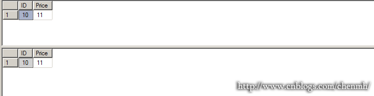

SQL Server 事务隔离级别详解
标签： SQL SEERVER/MSSQL SERVER/SQL/事务隔离级别选项/设置数据库事务级别
SQL 事务隔离级别
概述
隔离级别用于决定如果控制并发用户如何读写数据的操作，同时对性能也有一定的影响作用。
步骤
事务隔离级别通过影响读操作来间接地影响写操作；可以在回话级别上设置事务隔离级别也可以在查询（表级别）级别上设置事务隔离级别。
事务隔离级别总共有6个隔离级别：
READ UNCOMMITTED(未提交读,读脏),相当于(NOLOCK)
READ COMMITTED(已提交读,默认级别)
REPEATABLE READ(可以重复读),相当于(HOLDLOCK)
SERIALIZABLE(可序列化)
SNAPSHOT(快照)
READ COMMITTED SNAPSHOT(已经提交读隔离)
对于前四个隔离级别：READ UNCOMMITTED
获取事务隔离级别(isolation level)
1 | DBCC USEROPTIONS |
设置隔离
1 | 设置回话隔离 |
1.READ UNCOMMITTED
READ UNCOMMITTED:未提交读，读脏数据
默认的读操作:需要请求共享锁,允许其他事物读锁定的数据但不允许修改.
READ UNCOMMITTED:读操作不申请锁,运行读取未提交的修改,也就是允许读脏数据,读操作不会影响写操作请求排他锁.
创建测试数据
1 | IF OBJECT_ID('Orders','U') IS NOT NULL DROP TABLE Orders |
新建回话1将订单10的价格加1
1 | BEGIN TRANSACTION |
在另一个回话2中执行查询操作
1 | 首先不添加隔离级别,默认是READ COMMITTED,由于数据之前的更新操作使用了排他锁，所以查询一直在等待锁释放*/ |

假设在回话1中对操作执行回滚操作,这样价格还是之前的10,但是回话2中则读取到的是回滚前的价格11,这样就属于一个读脏操作
1 | ROLLBACK TRANSACTION |
2.READ COMMITTED
READ COMMITTED（已提交读）是SQL SERVER默认的隔离级别，可以避免读取未提交的数据，隔离级别比READ UNCOMMITTED未提交读的级别更高;
该隔离级别读操作之前首先申请并获得共享锁，允许其他读操作读取该锁定的数据，但是写操作必须等待锁释放，一般读操作读取完就会立刻释放共享锁。
新建回话1将订单10的价格加1,此时回话1的排他锁锁住了订单10的值
1 | BEGIN TRANSACTION |

在回话2中执行查询，将隔离级别设置为READ COMMITTED
1 | SET TRANSACTION ISOLATION LEVEL READ COMMITTED |
重置数据
1 | UPDATE Orders |
注意：但是由于READ COMMITTED读操作一完成就立即释放共享锁,读操作不会在一个事务过程中保持共享锁,也就是说在一个事务的的两个查询过程之间有另一个回话对数据资源进行了更改,会导致一个事务的两次查询得到的结果不一致,这种现象称之为不可重复读.
3.REPEATABLE READ
REPEATABLE READ(可重复读)：保证在一个事务中的两个读操作之间，其他的事务不能修改当前事务读取的数据，该级别事务获取数据前必须先获得共享锁同时获得的共享锁不立即释放一直保持共享锁至事务完成，所以此隔离级别查询完并提交事务很重要。
在回话1中执行查询订单10,将回话级别设置为REPEATABLE READ
1 | SET TRANSACTION ISOLATION LEVEL REPEATABLE READ |
新建回话2修改订单10的价格
1 | UPDATE Orders |
在回话1中执行下面语句，然后提交事务
1 | SELECT ID,Price FROM Orders |
回话1的两次查询得到的结果一致，前面的两个隔离级别无法得到一致的数据，此时事务已提交同时释放共享锁，回话2申请排他锁成功，对行执行更新
REPEATABLE READ隔离级别保证一个事务中的两次查询到的结果一致，同时保证了丢失更新
丢失更新：两个事务同时读取了同一个值然后基于最初的值进行计算，接着再更新，就会导致两个事务的更新相互覆盖。
例如酒店订房例子，两个人同时预定同一酒店的房间，首先两个人同时查询到还有一间房间可以预定，然后两个人同时提交预定操作，事务1执行number=1-0，同时事务2也执行number=1-0最后修改number=0,这就导致两个人其中一个人的操作被另一个人所覆盖，REPEATABLE READ隔离级别就能避免这种丢失更新的现象，当事务1查询房间时事务就一直保持共享锁直到事务提交，而不是像前面的几个隔离级别查询完就是否共享锁，就能避免其他事务获取排他锁。
4.SERIALIZABLE
SERIALIZABLE(可序列化)，对于前面的REPEATABLE READ能保证事务可重复读，但是事务只锁定查询第一次运行时获取的数据资源（数据行），而不能锁定查询结果之外的行，就是原本不存在于数据表中的数据。因此在一个事务中当第一个查询和第二个查询过程之间，有其他事务执行插入操作且插入数据满足第一次查询读取过滤的条件时，那么在第二次查询的结果中就会存在这些新插入的数据，使两次查询结果不一致，这种读操作称之为幻读。
为了避免幻读需要将隔离级别设置为SERIALIZABLE
1 | IF OBJECT_ID('Orders','U') IS NOT NULL DROP TABLE Orders |
在回话1中执行查询操作,并将事务隔离级别设置为REPEATABLE READ(先测试一下前面更低级别的隔离)
1 | SET TRANSACTION ISOLATION LEVEL REPEATABLE READ |

在回话2中执行插入操作
1 | INSERT INTO Orders VALUES(15,15.00,1) |
返回回话1重新执行查询操作并提交事务
1 | SELECT ID,Price,type FROM Orders |
结果回话1中第二次查询到的数据包含了回话2新插入的数据，两次查询结果不一致（验证之前的隔离级别不能保证幻读）
重新插入测试数据
1 | IF OBJECT_ID('Orders','U') IS NOT NULL DROP TABLE Orders |
接下来将回话级别设置为SERIALIZABLE,在回话1中执行查询操作,并将事务隔离级别设置为SERIALIZABLE
1 | SET TRANSACTION ISOLATION LEVEL SERIALIZABLE |

在回话2中执行插入操作
1 | INSERT INTO Orders VALUES(15,15.00,1) |
返回回话1重新执行查询操作并提交事务
1 | SELECT ID,Price,type FROM Orders |
两次执行的查询结果相同
重置所有打开回话的默认隔离级别
1 | SET TRANSACTION ISOLATION LEVEL READ COMMITTED |
5.SNAPSHOT
SNAPSHOT快照：SNAPSHOT和READ COMMITTED SNAPSHOT两种隔离（可以把事务已经提交的行的上一版本保存在TEMPDB数据库中）
SNAPSHOT隔离级别在逻辑上与SERIALIZABLE类似
READ COMMITTED SNAPSHOT隔离级别在逻辑上与 READ COMMITTED类似
不过在快照隔离级别下读操作不需要申请获得共享锁，所以即便是数据已经存在排他锁也不影响读操作。而且仍然可以得到和SERIALIZABLE与READ COMMITTED隔离级别类似的一致性；如果目前版本与预期的版本不一致，读操作可以从TEMPDB中获取预期的版本。
如果启用任何一种基于快照的隔离级别，DELETE和UPDATE语句在做出修改前都会把行的当前版本复制到TEMPDB中，而INSERT语句不需要在TEMPDB中进行版本控制，因为此时还没有行的旧数据
无论启用哪种基于快照的隔离级别都会对更新和删除操作产生性能的负面影响，但是有利于提高读操作的性能因为读操作不需要获取共享锁；
5.1SNAPSHOT
SNAPSHOT 在SNAPSHOT隔离级别下,当读取数据时可以保证操作读取的行是事务开始时可用的最后提交版本
同时SNAPSHOT隔离级别也满足前面的已提交读,可重复读,不幻读;该隔离级别实用的不是共享锁,而是行版本控制
使用SNAPSHOT隔离级别首先需要在数据库级别上设置相关选项
在打开的所有查询窗口中执行以下操作
1 | ALTER DATABASE TEST SET ALLOW_SNAPSHOT_ISOLATION ON; |
重置测试数据
1 | IF OBJECT_ID('Orders','U') IS NOT NULL DROP TABLE Orders |
1 | 在回话1中打开事务,将订单10的价格加1,并查询跟新后的价格 |
5.2READ COMMITTED SNAPSHOT
READ COMMITTED SNAPSHOT也是基于行版本控制,但是READ COMMITTED SNAPSHOT的隔离级别是读操作之前的最后已提交版本,而不是事务前的已提交版本，有点类似前面的READ COMMITTED能保证已提交读,但是不能保证可重复读,不能避免幻读,但是又比 READ COMMITTED隔离级别多出了不需要获取共享锁就可以读取数据
要启用READ COMMITTED SNAPSHOT隔离级别同样需要修改数据库选项，在回话1，回话2中执行以下操作(执行下面的操作当前连接必须是数据库的唯一连接，可以通过查询已连接当前数据库的进程,然后KILL掉那些进程,然后再执行该操作,否则可能无法执行成功)
1 | ALTER DATABASE TEST SET READ_COMMITTED_SNAPSHOT ON |
关闭所有连接,然后打开一个新的连接,禁用之前设置的数据库快照隔离级别选项
1 | ALTER DATABASE TEST SET ALLOW_SNAPSHOT_ISOLATION OFF; |
总结
理解了事务隔离级别有助于理解事务的死锁。

...
...
Copyright 2021 sunfy.top ALL Rights Reserved